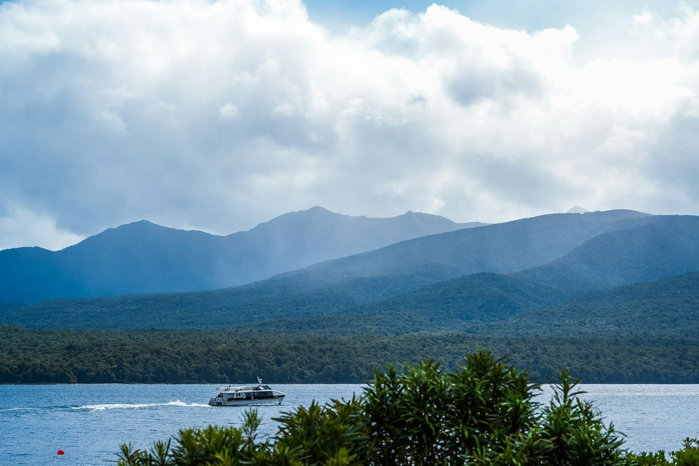
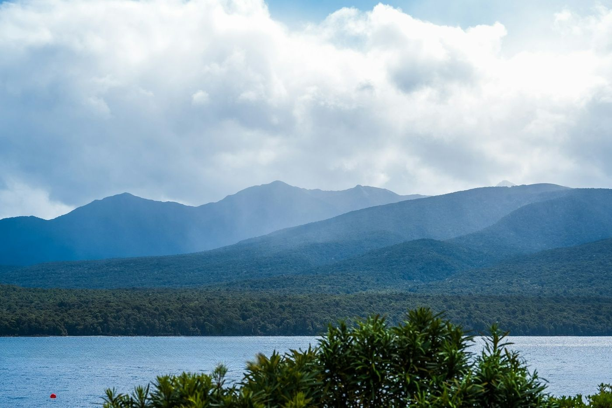
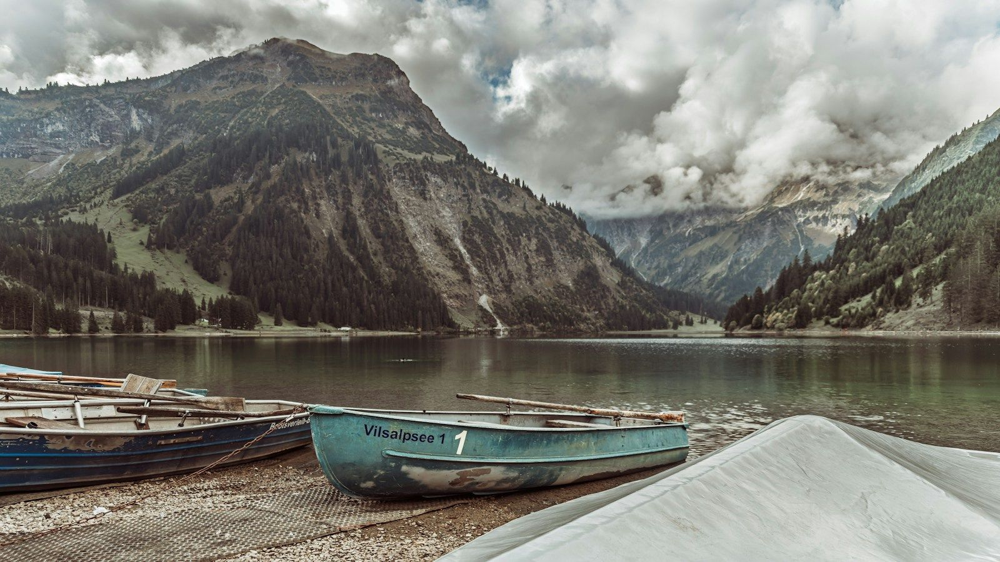
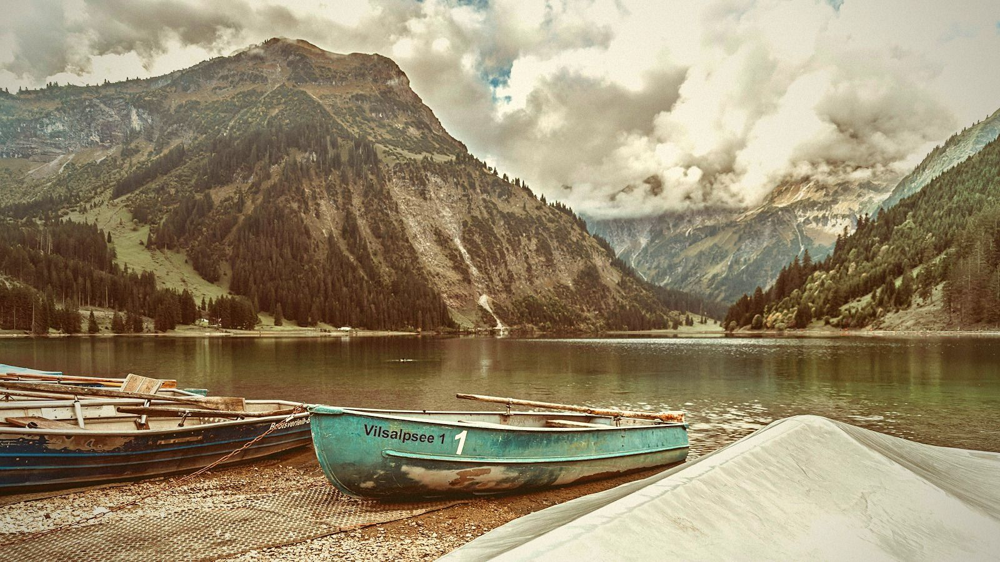
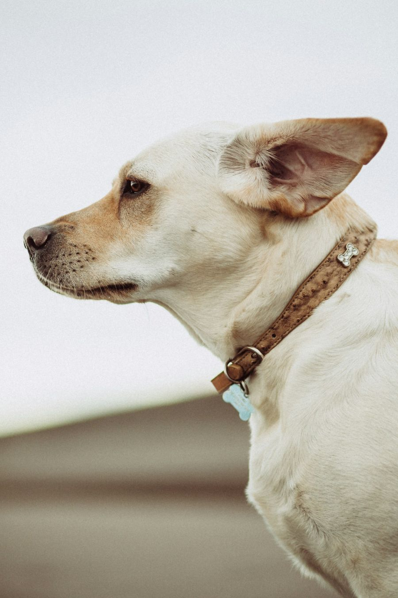
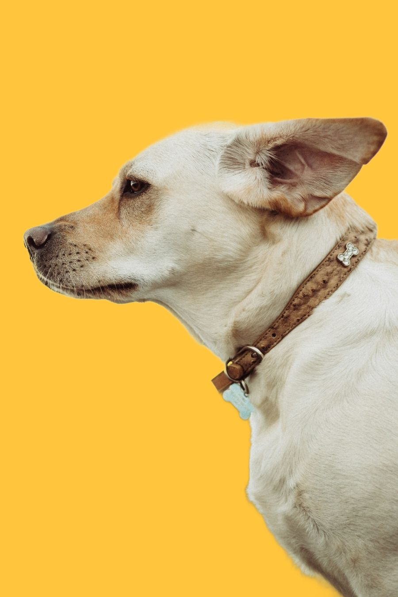
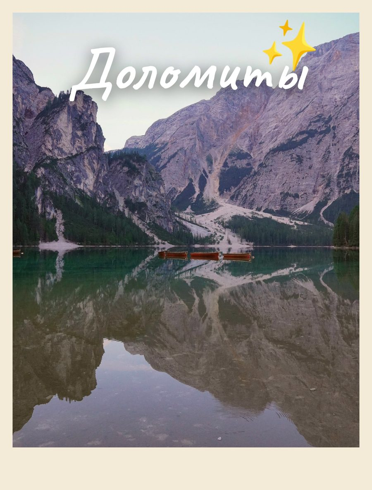

До ПослеУберите лишнее
Нажмите на то, что мешает: прохожего, лодку, мусор. ИИ сам выделит предмет, сотрёт его и дорисует то, что было за ним, в полном разрешении.
В редакторе: ИИ → Ластик
Стирайте лишнее одним нажатием, меняйте фон, сохраняйте в 4K. Фильтры, текст и стикеры в придачу. Бесплатно, без регистрации и водяных знаков.
Фото не загружается в интернет: всё обрабатывается на вашем устройстве.


До ПослеПотяните ползунок, чтобы сравнить. Обработка: фильтр «Плёнка», теплота, тени и лёгкое зерно.


До ПослеНажмите на то, что мешает: прохожего, лодку, мусор. ИИ сам выделит предмет, сотрёт его и дорисует то, что было за ним, в полном разрешении.
В редакторе: ИИ → Ластик


До ПослеИИ сам найдёт человека, животное или предмет и отделит его от фона. Фон можно сделать прозрачным, залить цветом или размыть.
В редакторе: ИИ → Фон

Подпишите фото красивым шрифтом, украсьте стикерами и оформите в рамку, как у полароидного снимка.
В редакторе: Текст, Стикеры и Рамка
12 фильтров в духе плёнки и кино с регулировкой силы.
Экспозиция, тени, цвет, резкость и зерно. Есть автоулучшение в одно нажатие.
Готовые пропорции для Instagram, сторис и YouTube, поворот и выравнивание горизонта.
Нажмите на предмет, и ИИ сам выделит его, сотрёт и дорисует фон.
Прозрачный, цветной или размытый фон за несколько секунд.
8 шрифтов с русскими буквами, обводка, тень и плашка.
Больше 50 эмодзи: двигайте, увеличивайте и поворачивайте их.
Кисть любого цвета и толщины прямо на фото.
Обычные и полароидные рамки, скруглённые углы.
Сохранение в 4K, 2K, 1080p, 720p и 480p. Если фото маленькое, ИИ дорисует детали.
Все правки можно отменить и вернуть, а исходное фото всегда остаётся целым.
Даже ИИ работает прямо в браузере, на вашем устройстве.
Обработка идёт прямо в браузере. Фото не загружается на сервер, и его никто не увидит.
Никаких подписок, регистрации и логотипов на готовом фото.
На телефоне и компьютере, в любом современном браузере. Ничего не нужно устанавливать.
Откройте редактор и выберите фото. Начать можно сразу.
Открыть редактор